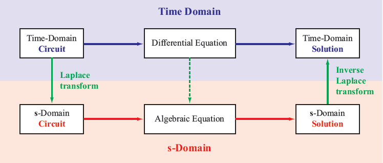
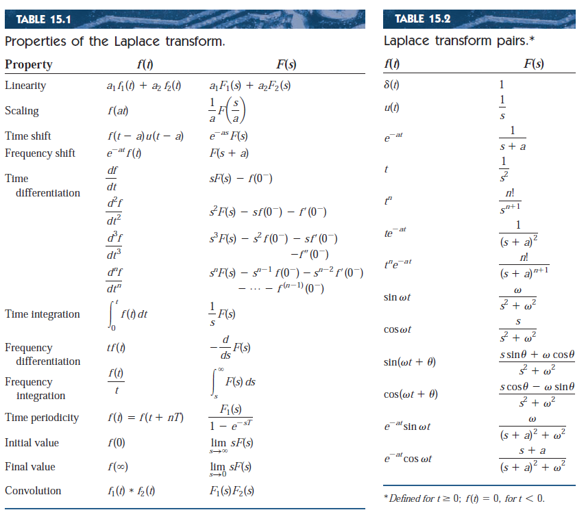
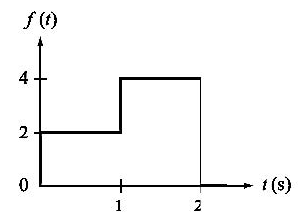
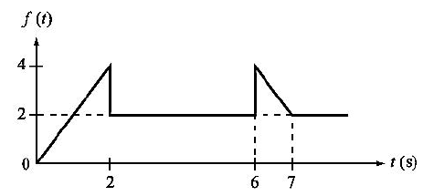
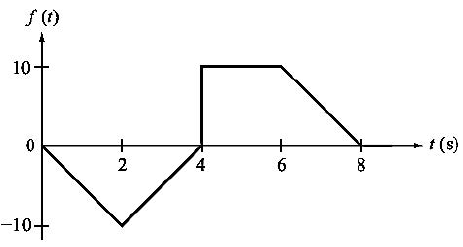

The Laplace Transformation is a linear transformation between two vector spaces. It is used as a bypass strategy to solve complex differential equations by transforming the differential equation into an algebraic expression that is easier to solve.
Given a differential equation, that we are unable to solve, we apply the Laplace transform “ℒ “ to map it from the t-domain into an algebraic equation in the s-domain.

We can then find a solution to the algebraic equation in the s-domain. Afterwards, we can use the inverse Laplace Transform “ℒ \(^{-1}\)” to return the solution to the t-domain.
There are several advantages of using the Laplace Transformation when analyzing circuits
- Since differential equations represent a RLC circuit in the time domain, the Laplace Transform is a powerful tool that allow us to use algebraic operations to analyze the circuit.
- It can provide insight into how a circuit behaves at different frequencies.
- It allows us to find the transfer function of the circuit. Knowing the transfer function can help us determine the circuit response to different inputs.
- It can be used to separate the transient and steady-state responses of a circuit.
- It is a simpler operation than convolution.
Given a function f(t), the Laplace transform is defined as the transformation of \(f\) to the function \(F\). The following equation defines it:
$$F(s)= \mathscr{L} {[f(t)]}= \int_{0}^{\infty} f(t)e^{-st} \; dt $$
Where \(s\) is a complex variable with a real part \(\sigma\) and an imaginary part \(\omega\)
$$s=\sigma+j\omega$$
If the integral converges, the Laplace Transform of the function exists. If it diverges, the Laplace Transform of the function doesn’t exist.
Examples:
Find the Laplace Transform of \(f(t)=1\)
$$\mathcal{L}{(1)}= \int_{0}^{\infty} e^{-st} \; dt$$
$$= \left. -\frac{e^{-st}}{s} \right|_{0}^{\infty}$$
$$=\frac{1}{s}$$
Find the Laplace Transform of \(f(t)=t\)
$$ \mathcal{L}{(t)}= \int_{0}^{\infty} te^{-st} \; dt$$
Using integration by parts:
$$= \left. \frac{te^{-st}}{s} \frac{e^{-st}}{s^2}\right|_{0}^{\infty}$$
$$=\frac{1}{s^2}$$
Find the Laplace Transform of \(f(t)=e^t\)
$$\mathcal{L}{(e^t)}= \int_{0}^{\infty} e^te^{-st} \; dt$$
$$= \int_{0}^{\infty} e^{-st+t} \; dt$$
$$= \int_{0}^{\infty} e^{-(s-1)t} \; dt$$
$$= \left. -\frac{e^{-(s-1)t}}{s-1} \right|_{0}^{\infty}$$
$$=\frac{1}{s-1}$$
Luckily, the most common Laplace Transforms have already been integrated and are available in a table ready for use.
The Laplace Transform is a linear transformation so it preserves:
$$\mathcal{L}{[C*f(t)]}=C*\mathcal{L}{[f(t)]}$$
$$\mathcal{L}{[f(t)+g(t)]}=\mathcal{L} {[f(t)]}+\mathcal{L} {[g(t)]}$$
In general
$$\mathcal{L}{[C*f(t)+D*g(t)]}=C*\mathcal{L} [f(t)]+D*\mathcal{L}{[g(t)]}$$
Several more properties are listed in the table below

Examples
Example 1:
$$f(t)={u(t)-u(t-1)}$$
Using the Time Shift Property:
$$F(S)=\frac{1}{s}-\frac{e^{-s}}{s}$$
Example 2:
$$f(t)=2tu(t-4)$$
Using the Time Shift Property:
$$f(t)=2(t-4+4)u(t-4)$$
$$f(t)=2((t-4)u(t-4)+4u(t-4))$$
$$F(S)=2(\frac{e^{-4s}}{s^2}+\frac{4e^{-4s}}{s})$$
$$F(S)=\frac{2e^{-4s}}{s^2}+\frac{8e^{-4s}}{s}$$
Example 3:
$$f(t)=10te^{-t}sin(2t)u(t)$$
Using the Frequency Differentiation Property:
$$F(S)=-10(\frac{d}{ds}[\frac{2}{(s+1)^2+4}])$$
$$F(S)=-10(\frac{-4(s+1)}{((s+1)^2+4)^2})$$
$$F(S)=\frac{40(s+1)}{(s+2s+5)^2}$$
Example 4:
$$f(t)=5cos(t)\delta(t-2)$$
$$= F(s)=5cos(2)e^{-2s} \;$$
Example 5:
$$f(t)=2tu(t)-\frac{d}{dt}\delta(t)$$
Using the Time Differentiation Property:
$$F(S)=\frac{2}{s^2}-4s(1-0)$$
$$F(S)=\frac{2}{s^2}-4s$$
Example 6:

$$f(t)={2u(t)+2u(t-1)-4u(t-2)}$$
$$F(S)=\frac{2}{s}+\frac{2e^{-s}}{s}-\frac{4e^{-s}}{s}$$
Example 7:

$$f(t)={2tu(t)-2tu(t-2)-2u(t-2)}+2u(t-6)-2tu(t-6)+2tu(t-7)$$
$$F(S)=\frac{2}{s^2}-\frac{2e^{-2s}}{s^2}-\frac{2e^{-2s}}{s}+\frac{2e^{-6s}}{s}-\frac{2e^{-6s}}{s^2}+\frac{2e^{-7s}}{s^2}$$
Example 8:

$$f(t)={-5tu(t)+10tu(t-2)-5tu(t-4)}+10u(t-4)-5tu(t-6)+5tu(t-8)$$
$$F(S)=-\frac{5}{s^2}+\frac{10e^{-2s}}{s^2}-\frac{5e^{-4s}}{s^2}+\frac{10e^{-4s}}{s}-\frac{5e^{-6s}}{s^2}+\frac{5e^{-8s}}{s^2}$$